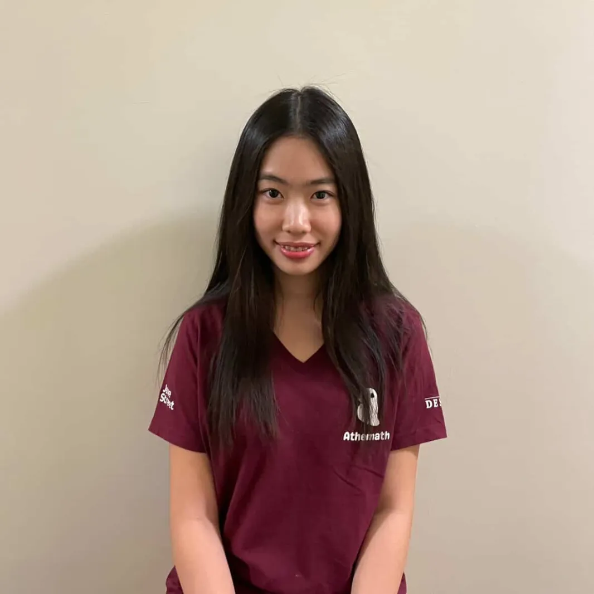
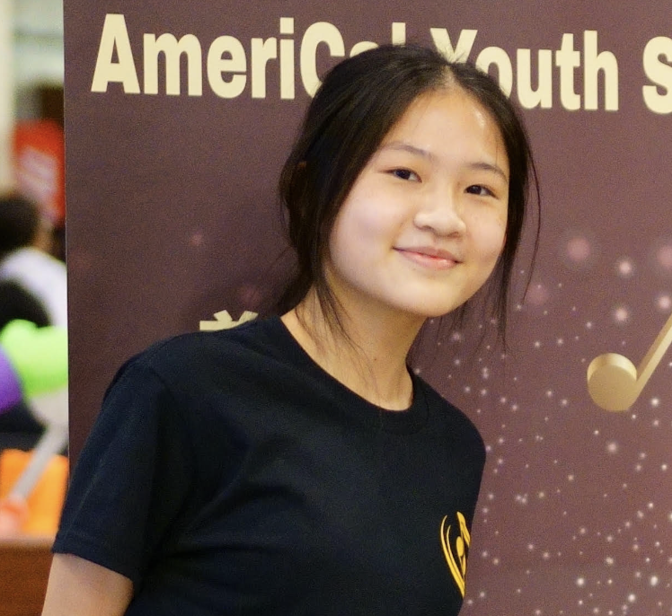
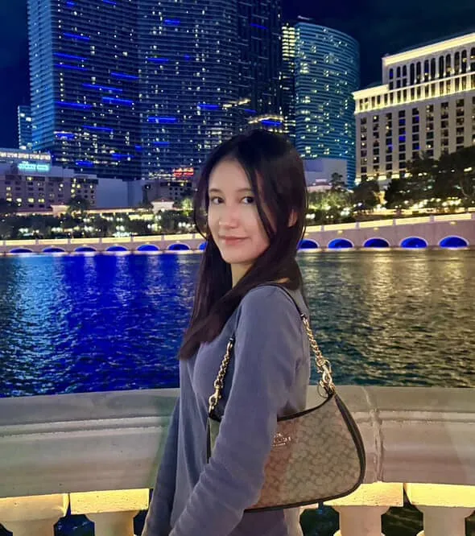
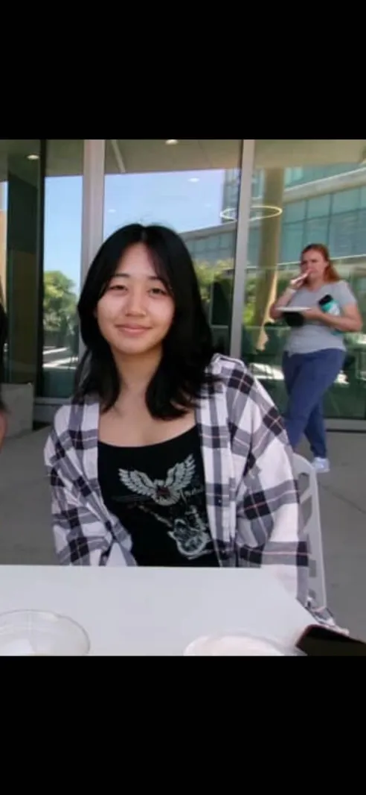
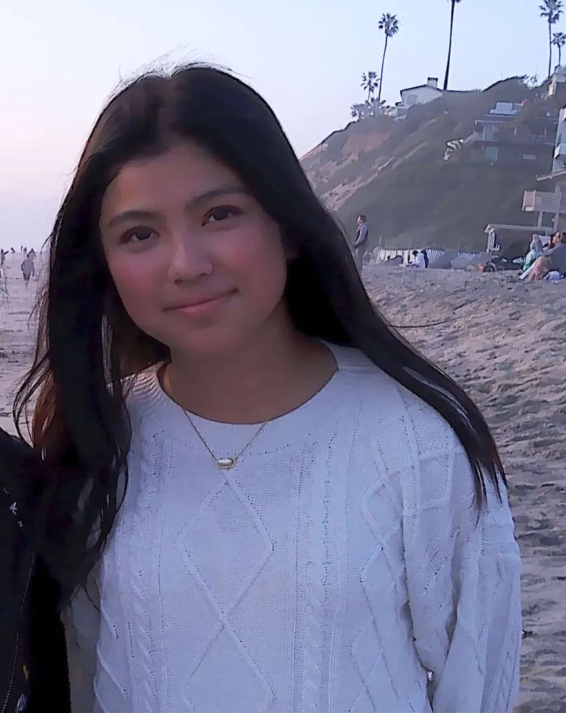

Our Team

Claire Lim
Chapter Head
Claire Lim is a senior at Canyon Crest Academy and has been part of San Diego Integirls since 2023. Aside from math, Claire enjoys playing the piano, listening to K-pop, and trying new foods!

Myrrh Park
Chapter Head
Myrrh Park is a senior at Canyon Crest Academy. Myrrh participates in competitive math and likes learning new methods to solve problems, as well math topics altogether. She enjoys crosswords, cryptograms, and other logic puzzles even if she's not very good at them.

Ashley Hu
Vice Chapter Head
Ashley Hu is a senior at Canyon Crest Academy. She competes in math and computer science competitions. Aside from academics, she enjoys listening to music and creating artwork as a member of CCA's Visual Arts Conservatory.

Diana Moon
Vice Chapter Head
Diana Moon is a sophomore at Canyon Crest Academy, and apart from academic works, she enjoy watching movies, reading, and writing her own stories.

Yufei Wu
Director of Technology
Yufei Wu is a senior at Canyon Crest Academy. She participates in Science Olympiad and various math competitions. In her free time, she enjoys drawing, folding origami, and hanging out with her friends.

Erica Dong
Director of Outreach
Erica is a senior at Canyon Crest Academy. She is also a coach for the CVMS Math League team and an AIME qualifier. In her free time, she likes to rock climb, listen to music, and visit cafés.

Laira Velazquez
Director of Outreach
Laira Velazquez is in sophomore year at Canyon Crest Academy. She is a passionate, excited student interested in math, astronomy, and art. In her free time, Laira plays the guitar or ukulele and likes to play survival and rhythm games.
Paniz Ghasemi
Director of Technology
Paniz Ghasemi is a sophomore at Canyon Crest Academy.

Linda Yang
Director of Social Media
Hi! Linda is a sophomore in Canyon Crest Academy. She is not technically new to Integirls since she has done some of the competitions, but it's her first year helping out!

Suhui (Luna) Kim
Director of Fundraising
Luna is a junior at Canyon Crest Academy. She is passionate about STEM and creating opportunities for students to engage in math. In her free time, she enjoys playing the violin, badminton, and Mario Kart Wii.
Alumni
Thank you to everyone who helped build INTEGIRLS San Diego!

Katrina Liu
Former Chapter Head

Maggie Liang
Former Director of Operations

Sophia Ahmed
Former Director of Operations

Isabella Zhou
Former Assistant Outreach

Brianna Zhang
Former Assistant Fundraising
Interested in joining the INTEGIRLS Team?
We're looking for high school girls who are interested in volunteering their time to support our cause. Positions include facilitating outreach, fundraising, website management, and graphic design. If you're interested in helping out with any of these things, consider filling out the application below!